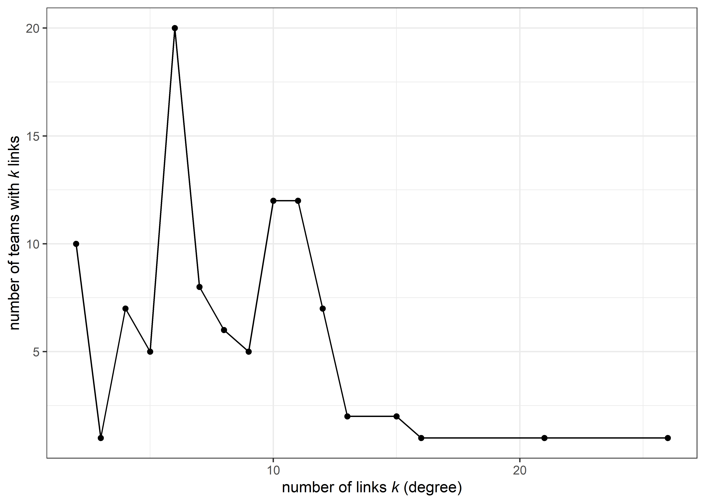

library(tidyverse)
library(tidygraph)
library(ggraph)
library(igraph)
source(here::here("R/functions.R"))
pretty_summary <- function(graph) {
summarise_graph(graph) %>%
rename("Number of Nodes" = n_nodes, "Average degree" = avg_degree,
"Clustering coefficient" = clustering, "Average path distance" = mean_dist) %>%
knitr::kable()
}Network generation
Rationale
We aim to assess network effects by embedding the teams in our simulation into different kinds of networks. This is intended to reduce the number of abstractions that the model entails, thus making the model slightly more “realistic”, in that actual researchers are of course embedded into a network of social ties, and these ties have an effect on the researchers themselves.
The literature on co-authorship networks (see e.g., M. E. J. Newman (2004), M. Newman (2001), Kumar (2015)) generally finds them to exhibit dynamics of both small-world networks Watts and Strogatz (1998) and scale-free networks Albert and Barabási (2002). In plain language, co-authorship networks tend to comprise small groups of authors who collaborate frequently, with a few highly connected authors, who tend to be well-known and key figures in a community. Given that our model considers research teams, rather than individual researchers, we did not attempt to calibrate our networks against any given network, but rather to contrast networks with high and low clustering. This can be thought of contrasting research in the natural sciences, such as in physics, with research in the social sciences. As a baseline, we consider a random network.
Package setup
Baseline - random network
For the random network, we simulate a graph according to the Erdős–Rényi model in the \(G(n,p)\) variant, with \(n = 100\) and \(p = 0.06\). The value for \(p\) was chosen to be as low as possible while still obtaining a fully connected network. Figure 1 shows the resulting network. Key summary statistics are provided in Table 1.
set.seed(20230617)
n <- 100
p <- .06
random_network <- play_erdos_renyi(n = n, p = p, directed = FALSE)
# add an id column for the analysis
random_network <- random_network %>%
mutate(id = 1:n)plot_graph(random_network, layout = "stress", groups = FALSE)
pretty_summary(random_network)Table 1: Summary statistics for random network
| Number of Nodes | Average degree | Clustering coefficient | Average path distance |
|---|---|---|---|
| 100 | 5.66 | 0.044 | 2.818 |
# we save the layout as well, so that VOSViewer can read the file
random_layout <- layout_with_kk(random_network)
# save to file
random_network %>%
mutate(x = random_layout[, 1],
y = random_layout[, 2]) %>%
write_graph("data/random_network.gml", format = "gml")Warning in write.graph.gml(graph, file, ...): At core/io/gml.c:675 : A boolean
graph attribute was converted to numeric.Case 1: Low clustering
The first case of interest is a network with low clustering. The network is set up to exhibit traits of both small-world and scale-free networks. We simulate the network in three steps:
- We first generate multiple small-world networks that resemble clusters or communities within the field of interest.
- We add many edges to a few randomly picked nodes to create hubs. The edges are added by following the Barbasi-Albert algorithm:
- Pick a random node \(o\).
- Pick a second node \(k\) from all nodes (except the node chosen in step 1), with probability \(p(e)\), where \(e = \frac{degree_k}{\sum_{i=1}^{k} degree_k}\)
- Add edge from \(o\) to \(k\).
- We remove any nodes that are not connected to the main component.
- Add further nodes and edges according to the Barbasi-Albert algorithm to ensure sample size of \(n = 100\).
Step 1: create fragmented communities
fragmented_setup <- tibble(
n_dim = rep(1, 5), # number of clusters
dim_size = c(10, 25, 20, 25, 20), # n of clusters
order = c(1, 2, 1, 2, 1), # neigborhood size
p_rewire = c(.3, .2, .3, .2, .3) # rewire probability
)
fragmented_graphs <- pmap(fragmented_setup, play_smallworld)
fragmented <- bind_graphs(fragmented_graphs)
plot_graph(fragmented)
pretty_summary(fragmented)| Number of Nodes | Average degree | Clustering coefficient | Average path distance |
|---|---|---|---|
| 100 | 3 | 0.172 | 3.003 |
Step 2: add hubs
hubs <- rerun_addition(fragmented, times = 1, n_new_edges = 15)
hubs <- rerun_addition(hubs, times = 1, n_new_edges = 10)plot_graph(hubs, groups = TRUE)
pretty_summary(hubs)| Number of Nodes | Average degree | Clustering coefficient | Average path distance |
|---|---|---|---|
| 100 | 3.5 | 0.149 | 4.425 |
Step 3: Remove unconnected nodes
connected <- hubs %>%
filter(!node_is_isolated())Step 4: Add nodes and edges
final_fragmented <- sample_pa(100, start.graph = connected, out.pref = TRUE,
m = 1, power = 1, directed = FALSE) %>%
as_tbl_graph()plot_graph(final_fragmented, layout = "stress")
pretty_summary(final_fragmented)| Number of Nodes | Average degree | Clustering coefficient | Average path distance |
|---|---|---|---|
| 100 | 3.52 | 0.149 | 4.449 |
plot_degree(final_fragmented)
fragmented_layout <- layout_with_kk(final_fragmented)
# save to file
final_fragmented %>%
mutate(x = fragmented_layout[, 1],
y = fragmented_layout[, 2]) %>%
write_graph("data/fragmented_network.gml", format = "gml")Case 2: High clustering
Step 1: create clustered communities
clustered_setup <- tibble(
n_dim = rep(1, 4), # number of clusters
dim_size = c(10, 25, 20, 30), # n of clusters
order = c(3, 3, 4, 6), # neigborhood size
p_rewire = c(.01, .03, .05, .01) # rewire probability
)
clustered_graphs <- pmap(clustered_setup, play_smallworld)
clustered <- bind_graphs(clustered_graphs)
plot_graph(clustered)
pretty_summary(clustered)| Number of Nodes | Average degree | Clustering coefficient | Average path distance |
|---|---|---|---|
| 85 | 8.588 | 0.608 | 1.91 |
Step 2: add hubs
hubs <- rerun_addition(clustered, times = 1, n_new_edges = 15)
hubs <- rerun_addition(hubs, times = 3, n_new_edges = 10)plot_graph(hubs, groups = TRUE)pretty_summary(hubs)| Number of Nodes | Average degree | Clustering coefficient | Average path distance |
|---|---|---|---|
| 85 | 9.647 | 0.512 | 2.768 |
Step 3: Remove unconnected nodes
connected <- hubs %>%
filter(!node_is_isolated())Step 4: Add nodes and edges
final_clustered <- sample_pa(100, start.graph = connected, out.pref = TRUE,
m = 2, power = 1, directed = FALSE) %>%
as_tbl_graph()plot_graph(final_clustered, layout = "stress")pretty_summary(final_clustered)| Number of Nodes | Average degree | Clustering coefficient | Average path distance |
|---|---|---|---|
| 100 | 8.8 | 0.473 | 2.86 |
plot_degree(final_clustered)
clustered_layout <- layout_with_kk(final_clustered)
# save to file
final_clustered %>%
mutate(x = clustered_layout[, 1],
y = clustered_layout[, 2]) %>%
write_graph("data/clustered_network.gml", format = "gml")References
Albert, Réka, and Albert-László Barabási. 2002. “Statistical Mechanics of Complex Networks.” Reviews of Modern Physics 74 (1): 47–97. https://doi.org/10.1103/RevModPhys.74.47.
Kumar, Sameer. 2015. “Co-Authorship Networks: A Review of the Literature.” Aslib Journal of Information Management 67 (1): 55–73. https://doi.org/10.1108/AJIM-09-2014-0116.
Newman, M. E. J. 2004. “Coauthorship Networks and Patterns of Scientific Collaboration.” Proceedings of the National Academy of Sciences 101 (suppl_1): 5200–5205. https://doi.org/10.1073/pnas.0307545100.
Newman, Mark. 2001. “The Structure of Scientific Collaboration Networks.” Proceedings of the National Academy of Sciences of the United States of America 98 (2): 404–9. https://doi.org/10.1073/pnas.98.2.404.
Watts, Duncan J., and Steven H. Strogatz. 1998. “Collective Dynamics of ‘Small-World’ Networks.” Nature 393 (6684): 440–42. https://doi.org/10.1038/30918.